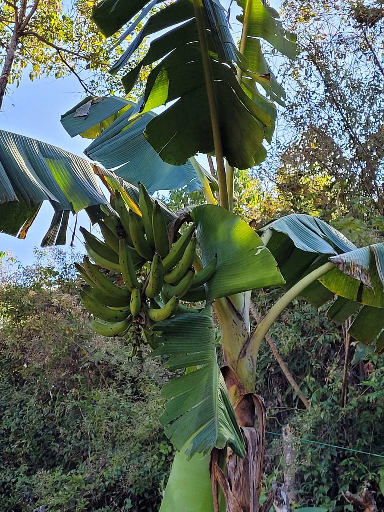
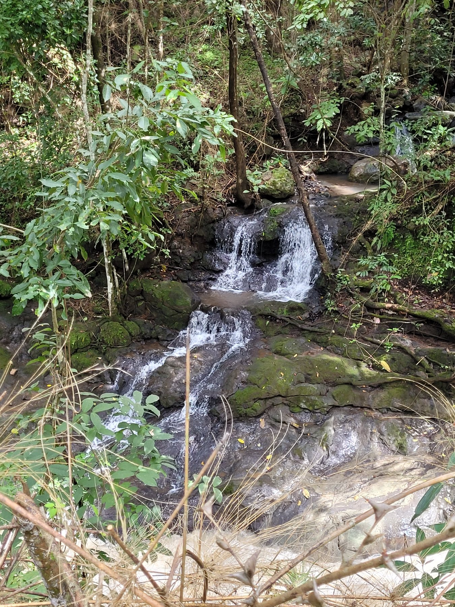
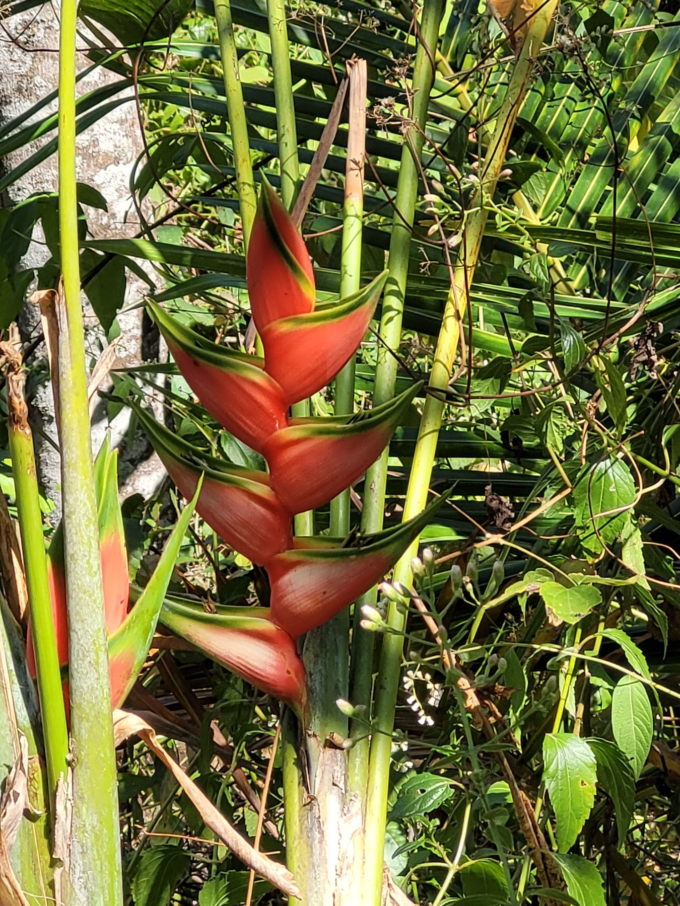
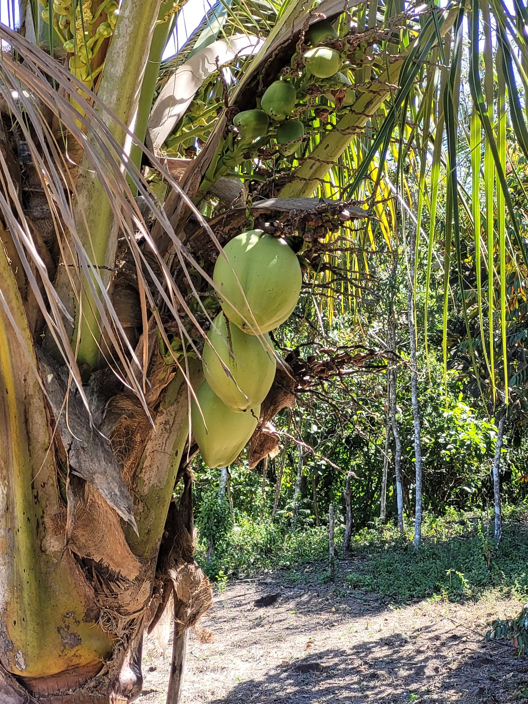
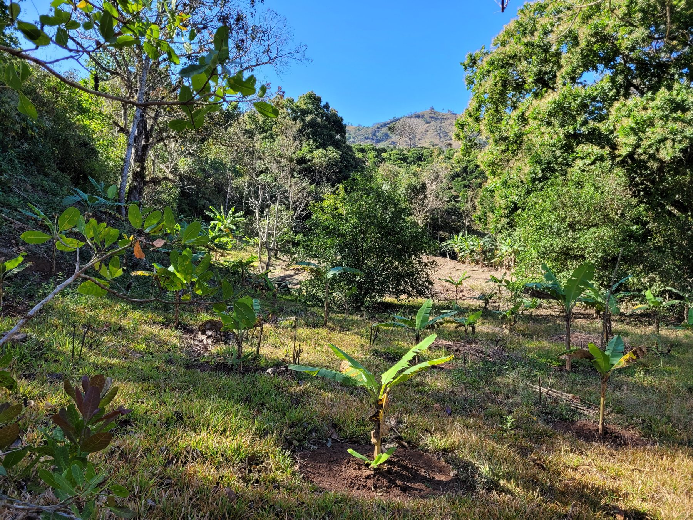
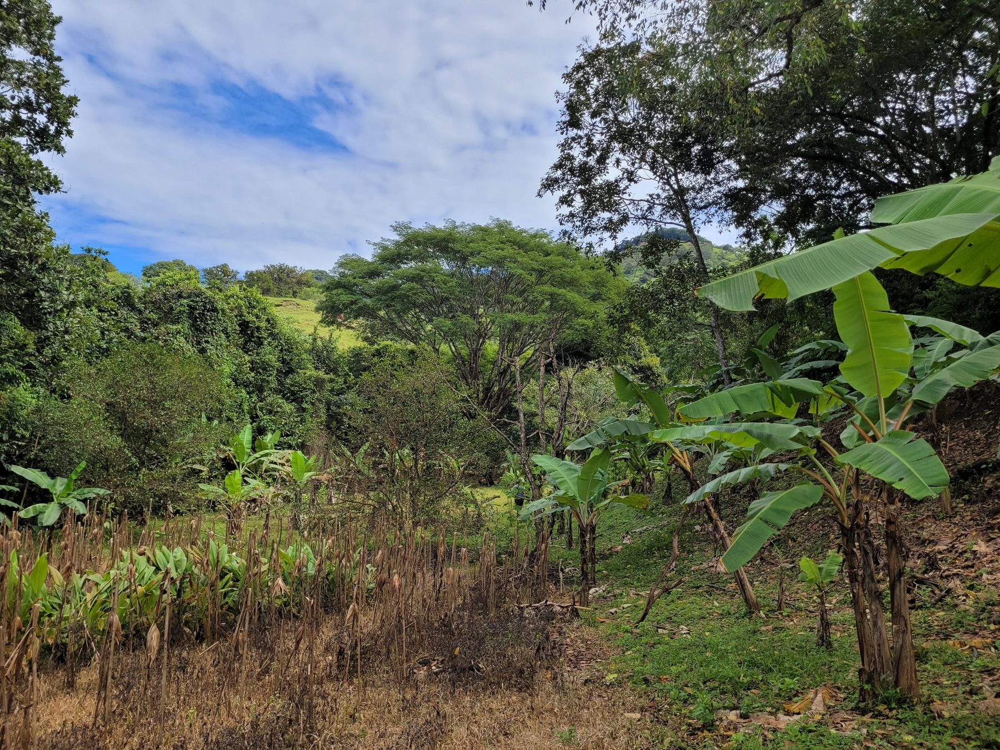
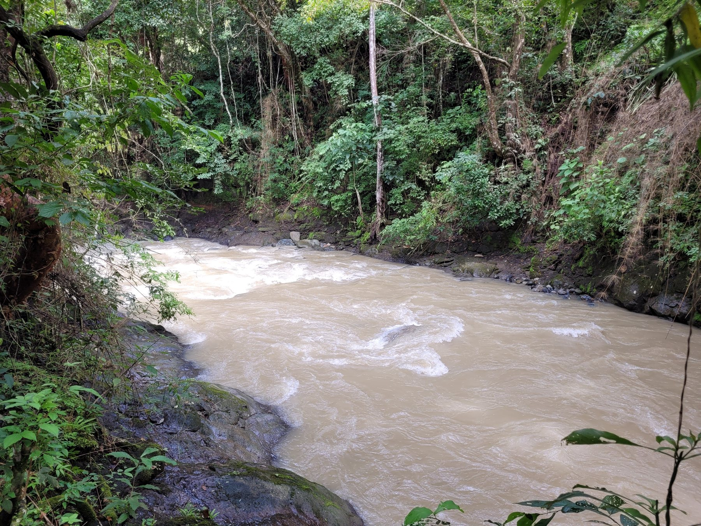
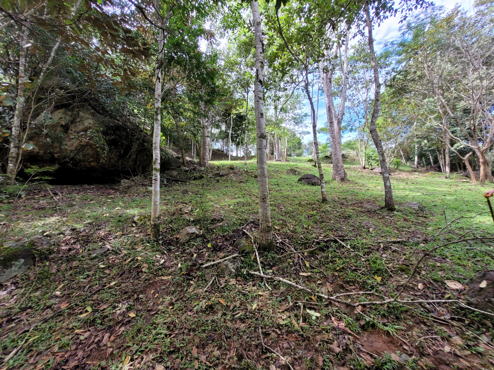
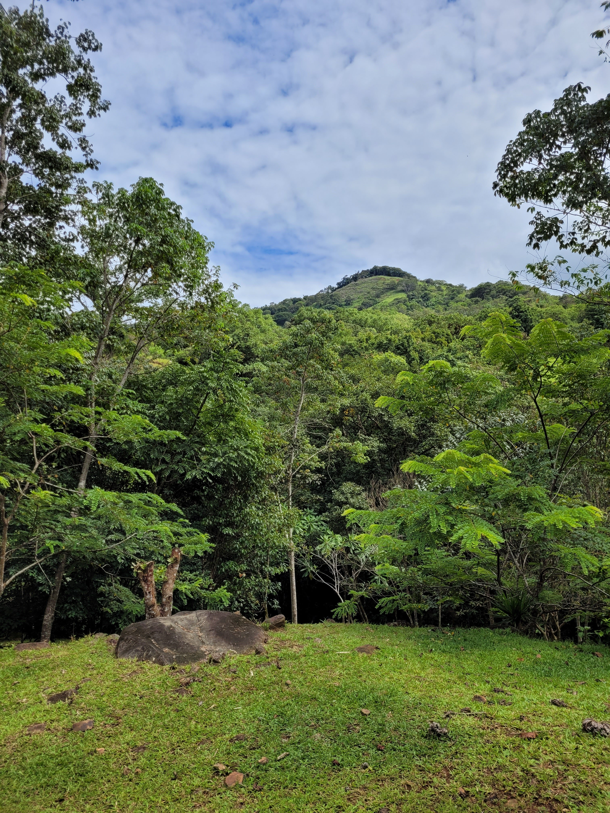
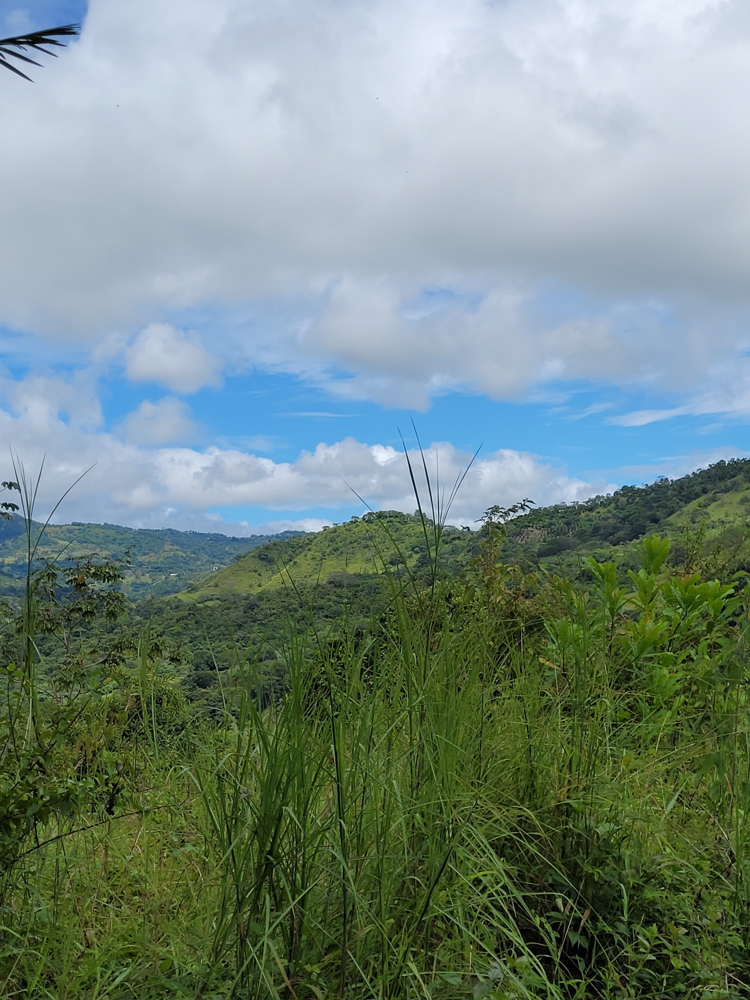

Propiedad en venta · Acosta, San José
Finca Toledo
Toledo · Guaitil · Acosta · San José · Costa Rica
39.730,46 m² rodeados de naturaleza, privacidad, río, bosque, agua propia y electricidad. Una oportunidad con alto potencial para uso residencial, turístico, recreativo o inversión patrimonial.
La propiedad
Una finca con naturaleza, acceso y gran proyección de valor
Finca Toledo combina un entorno natural privilegiado con características muy atractivas para vivienda, recreación, turismo rural, glamping, cabañas, conservación o inversión patrimonial.
Su ubicación en Toledo de Guaitil, Acosta, ofrece privacidad y tranquilidad, manteniendo conexión con servicios esenciales y el Valle Central.
Características
Elementos que aumentan el valor de la propiedad
La finca reúne atributos escasos en una sola propiedad: naturaleza, acceso, servicios, agua, bosque, río y usos flexibles.
Agua propia
Un recurso clave para uso privado, agrícola o turístico.
Electricidad
Facilita el desarrollo de infraestructura y proyectos.
Bosque
Ambiente natural con privacidad y atractivo paisajístico.
Río
Un elemento diferenciador para experiencias de naturaleza.
Potencial de desarrollo
Múltiples oportunidades en un solo lugar
Una propiedad versátil para desarrollar un proyecto personal, familiar o comercial integrado con la naturaleza.
Residencia privada
Espacio ideal para una casa de descanso o residencia permanente con privacidad.
Glamping y cabañas
Potencial para hospedaje de naturaleza, experiencias rurales y turismo sostenible.
Hotel boutique
Concepto de alojamiento exclusivo en armonía con el paisaje y el bosque.
Centro de bienestar
Retiros, yoga, meditación y actividades de desconexión en un entorno natural.
Uso recreativo
Espacio para reuniones familiares, descanso, senderos y actividades privadas.
Inversión patrimonial
Propiedad con características diferenciales y proyección de valorización.
Galería
Conozca visualmente Finca Toledo
Imágenes reales de la propiedad y su entorno natural.













Documentos
Material disponible para revisión
Descargue los documentos comerciales y técnicos asociados a la propiedad.
Ubicación
Toledo de Guaitil, Acosta, San José
La propiedad se ubica en una zona tranquila, rodeada de paisaje rural y natural, con acceso durante todo el año.
- Acceso vehicular.
- Entorno natural de montaña.
- Privacidad y tranquilidad.
- Coordenadas: 9.807445, -84.242171.
Oportunidad única
Una propiedad lista para descubrir su verdadero potencial
Solicite información, coordine una visita o revise los documentos de la propiedad.
Contacto
Solicite más información o programe una visita
Para conocer la propiedad, recibir el dossier comercial o resolver consultas, comuníquese directamente con la propietaria.